「帝都」充满商业味的古城南锣鼓巷
实话说,帝都北京市一座不喜欢的城市。就在弹指之间，就算这个城市待几十分钟我都无法喜欢上这个城市，如今北京我已经来第三次，也是最后一次。
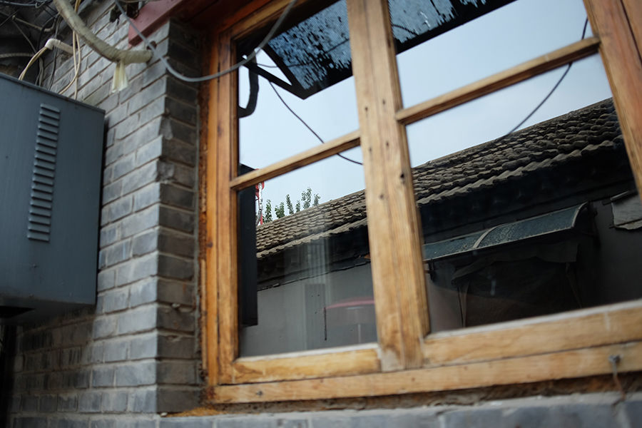
记得十年前有人说，天蓝地净水清那就是北京。我再胡同窗户上，只能看到半个蓝天，其余都是雾霾。
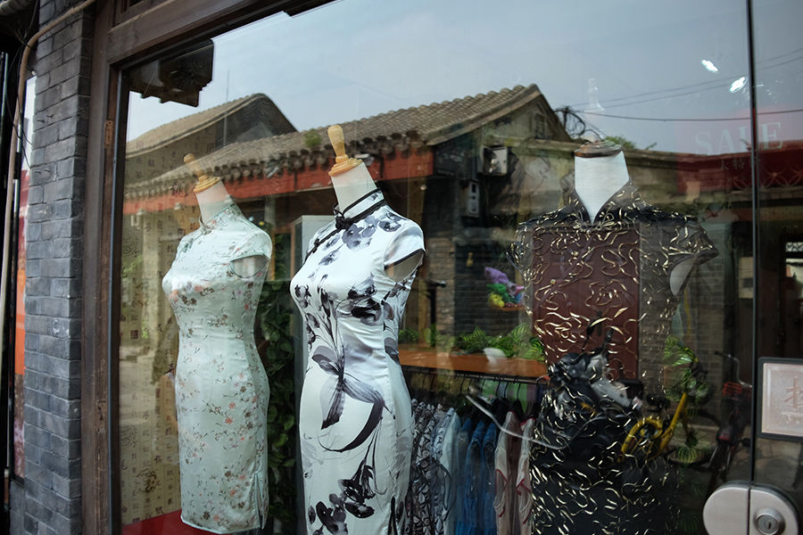
中式传统服装店，这里旗袍很像上海。
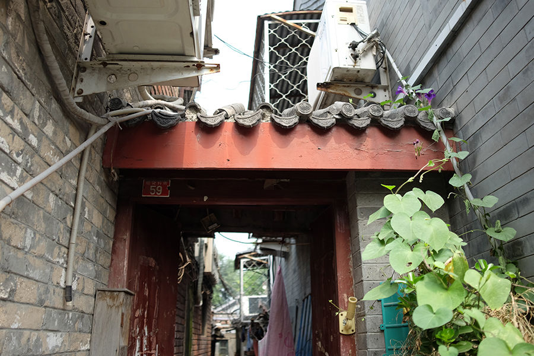
老式的院门，古老的味道很有意思，一旦到了过年有家的感觉。
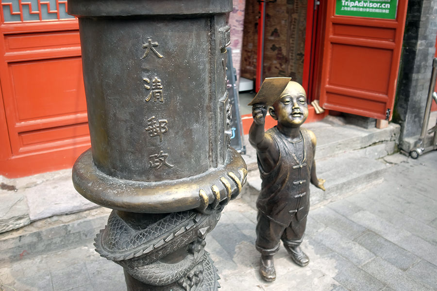
大清邮局。
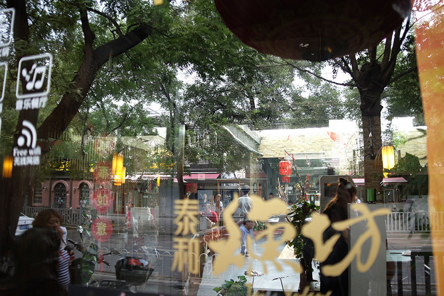
对面街坊，人太多了，车也多，喧闹不能安静。
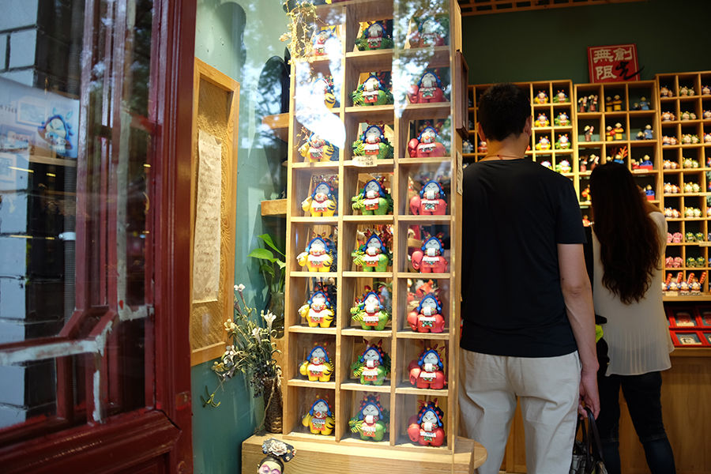
每个小店都有自己的装饰风格，猜猜这是我么？
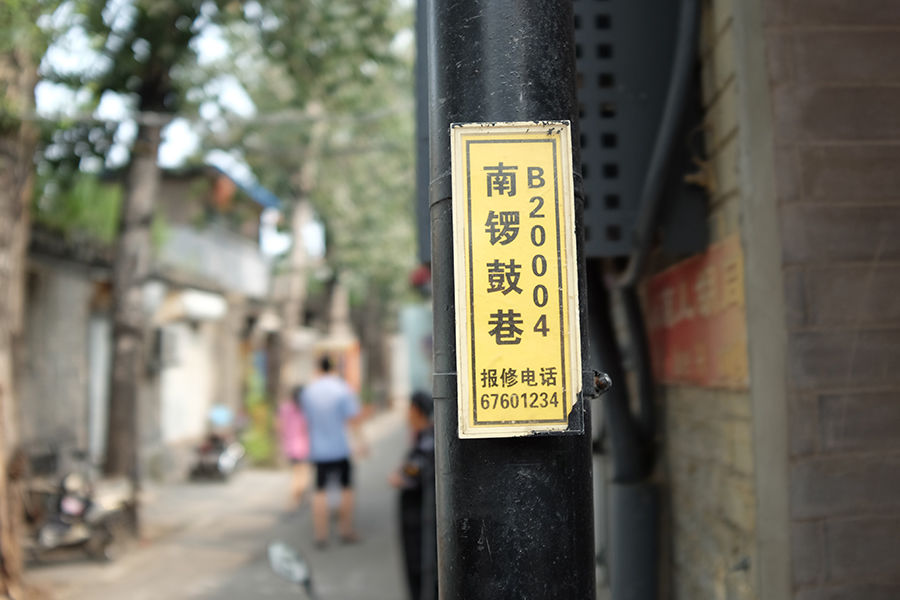
你好，南锣鼓巷
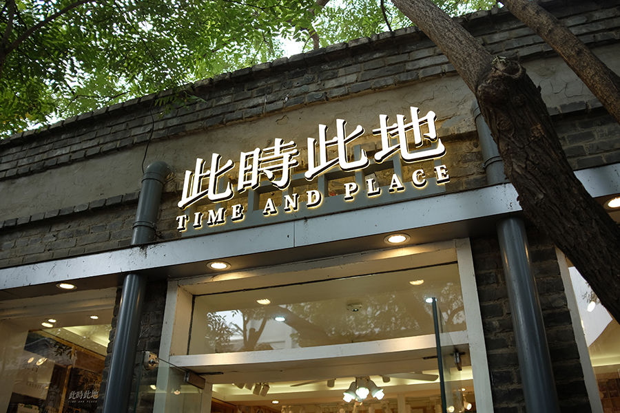
这家店可以给全国寄件，手册画面确实很精美。
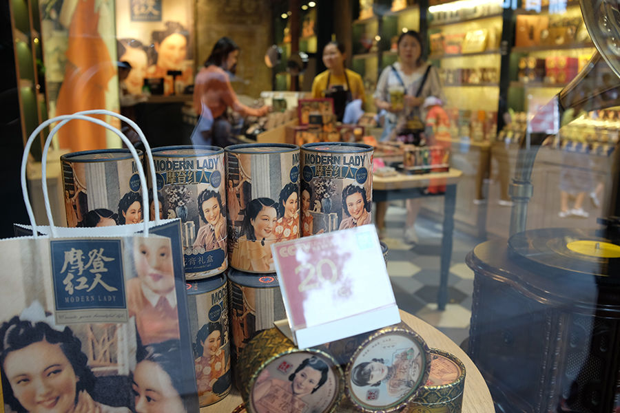
怀旧风格的化妆品店，本来上海的东西，你来北京了...
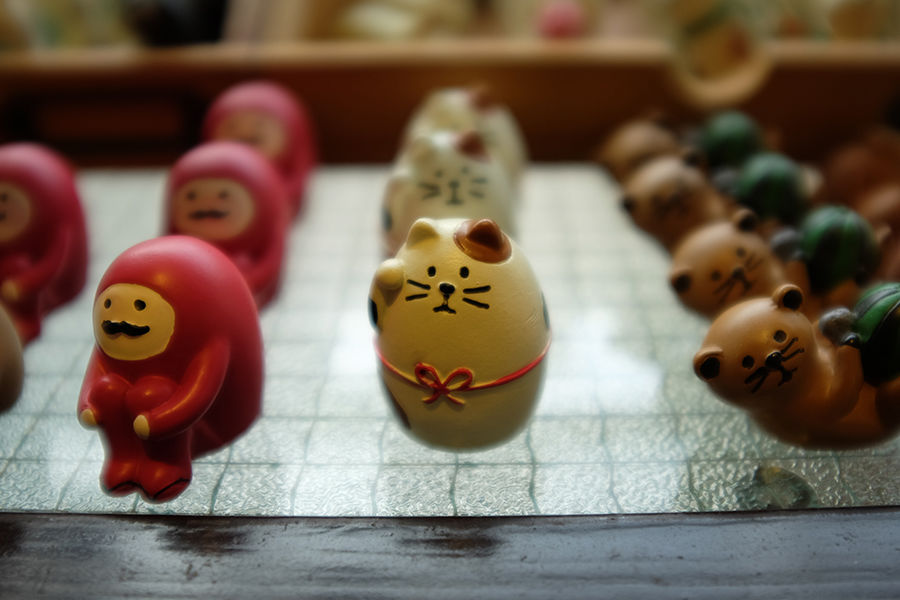
可爱的手工制品小玩意，其它城市还真的没有
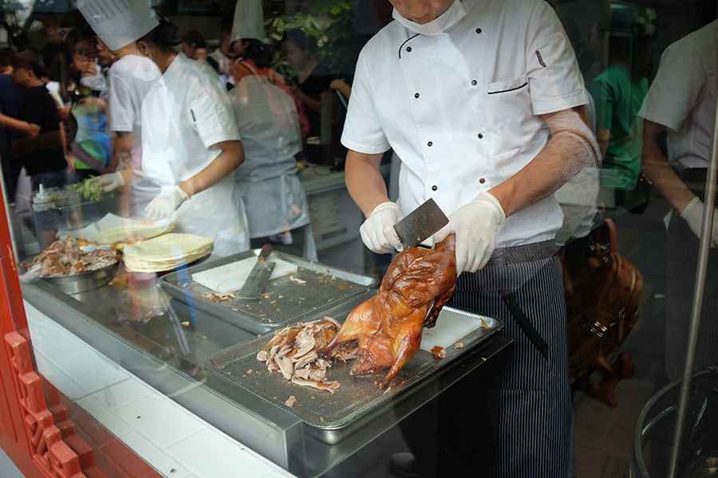
独一味二的烤鸭卷饼，味道真绝了。还有冰糖雪梨汤，把雪梨和桂圆、银耳、大枣、枸杞等一同在大锅里煮等一杯喝的，很可惜没拍上。
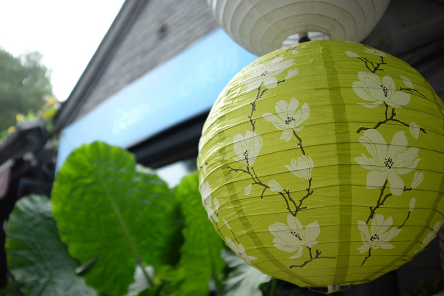
好不容易挑了个游客不太多的画面，很像日本，不是吗？